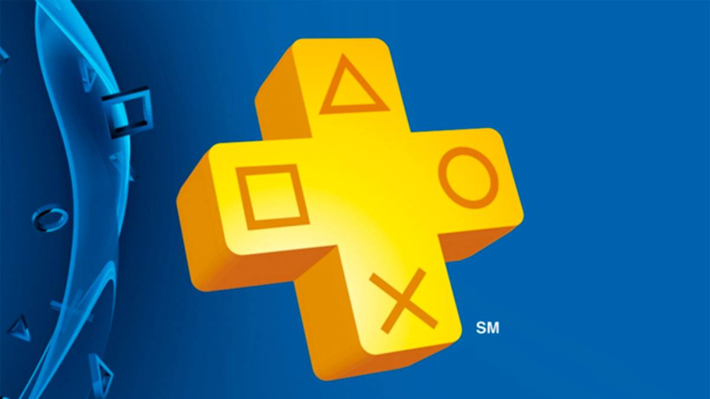

Novedades


Playstation Plus

Expande tu colección de juegos con dos juegos de PS4 incluidos cada mes: son tuyos para jugar mientras seas miembro. Aumenta tu colección con éxitos de taquilla, joyas indie y juegos multijugador en equipo para jugar online o en casa con tu familia y amigos. Este mes, disfruta tres juegos con valor de $89.97* disponibles para descargar ya para todos los miembros de PlayStation Plus.
Consola PlayStation 5
Play Has No Limits™
Experimenta una velocidad sorprendente con una SSD de velocidad ultrarrápida, una inmersión más profunda con soporte para respuesta háptica, gatillos adaptables y audio 3D*, además de una generación completamente nueva de juegos de PlayStation®
Multijugador online
Lleva a tu equipo a la gloria, entra a la batalla con tu equipo o enfrenta emocionantes aventuras con aliados de confianza. El multijugador online de PS Plus abre nuevos mundos en tus juegos favoritos, te permite jugar online con tus amigos y competir en torneos online; además, es tu invitación para unirte a una comunidad global de jugadores online
SSD de alta velocidad

Aprovecha al máximo tus sesiones de juego con tiempos de carga casi instantáneos para los juegos instalados en la PS5™
E/S integradas
La integración personalizada de los sistemas de la consola PS5 les permite a los creadores obtener datos desde la SSD tan rápido que pueden diseñar juegos de maneras que antes no eran posibles.
Gracias por visitar esta pagina, creado por: Apaza Quispe Bladimir